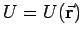
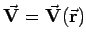
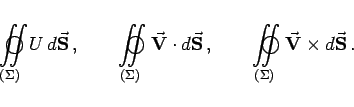

Inhalt Index DeskTop Bronstein

 Vektoranalysis und Feldtheorie Räumliche Differentialoperationen Richtungs- und Volumenableitung
Vektoranalysis und Feldtheorie Räumliche Differentialoperationen Richtungs- und Volumenableitung


Als Volumenableitung eines Skalarfeldes  oder eines Vektorfeldes  in einem Punkt  werden drei Größen bezeichnet, die folgendermaßen gewonnen werden:
werden drei Größen bezeichnet, die folgendermaßen gewonnen werden:
|  | (13.31b) |